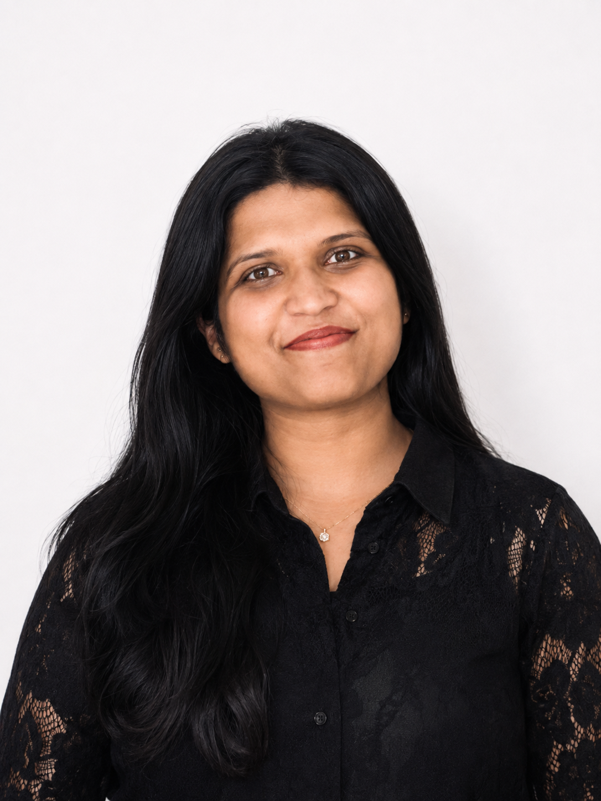

I work on clinically grounded machine learning for cancer imaging, with research spanning 3D CT analysis, multimodal medical AI, lesion-level malignancy-risk modelling, uncertainty-aware evaluation, reproducible medical-imaging pipelines, and research engineering for robust machine-learning systems.

My research focuses on clinically dependable AI for medical imaging and computational oncology, particularly how imaging representations, multimodal information, and rigorous evaluation can support cancer characterisation and clinical decision-making.
My work has progressed from multi-label concept detection and
exploratory image-text modelling in medical images to reproducible
clinical-imaging experiments and, most recently, volumetric thoracic
CT analysis using LIDC-IDRI.
I work with raw DICOM data, CT volume reconstruction,
Hounsfield-unit conversion, radiologist annotations,
spacing-aware 3D lesion extraction, PyTorch-based 3D CNNs,
patient-level evaluation, bootstrap uncertainty analysis,
and acquisition-based subgroup analysis.
In parallel, my current research-engineering work focuses on
machine-learning reproducibility, deterministic model parity,
pattern recognition, expression generation, online-learning workflows,
and systematic investigation of numerical and implementation
differences across Java and Python environments.
My longer-term research interests include multimodal medical AI,
quantitative CT and PET imaging, longitudinal clinical modelling,
robust and explainable AI, foundation models for medical imaging,
and clinically meaningful evaluation across institutions,
scanners, and patient populations.
Current and completed work spanning medical imaging, computational oncology, multimodal learning, and reproducible machine-learning research.
Investigated whether learning radiologist-annotated morphological characteristics alongside malignancy risk could improve pulmonary nodule assessment in 3D CT. The study compared a single-task malignancy model with a multi-task model jointly learning malignancy, spiculation, and lobulation.
Processed 742 patients and 3,918 reader-level nodule annotations from LIDC-IDRI. Reconstructed CT volumes from raw DICOM series using geometric slice ordering and Hounsfield Unit conversion, aligned SOP identifiers with radiologist XML annotations, extracted lesion-centred 3D volumes, and resampled them to 64 × 64 × 64 for PyTorch-based modelling.
Evaluation included patient-level train/validation/test separation, ROC-AUC, balanced accuracy, sensitivity and specificity, 2,000-resample paired bootstrap analysis, and subgroup evaluation across CT slice thickness to examine acquisition-related heterogeneity.
An earlier chest X-ray experiment demonstrated why threshold selection and clinically relevant metrics matter. Threshold optimisation increased balanced accuracy to approximately 0.82, while Grad-CAM and error analysis highlighted false-positive bias and potential shortcut learning.
Investigated multi-label concept detection using approximately 75,000–80,000 medical and radiology images with associated captions and UMLS/CUI-style clinical concept labels. Developed preprocessing, training, validation and evaluation pipelines using PyTorch, PyTorch Lightning and ResNet18, and explored FLAVA-based image-text representation learning for multimodal medical-image understanding.
Built a reproducible medical-image classification workflow using MONAI and PyTorch, including domain-specific transforms, structured dataset handling, model training, validation, and performance evaluation.
Developed a reproducible classical machine-learning workflow for breast-cancer classification using the Wisconsin Diagnostic Breast Cancer dataset, including preprocessing, feature handling, model comparison, and evaluation beyond aggregate accuracy.
Scholarly outputs arising from my work in medical imaging and computational oncology.
Investigates whether jointly learning radiologist-annotated spiculation and lobulation alongside malignancy risk improves pulmonary nodule classification from lesion-centred 3D CT volumes. Single-task and multi-task 3D CNNs were compared using patient-level evaluation, paired bootstrap uncertainty analysis, and acquisition-based subgroup analysis.
Multi-label medical-image concept detection using radiology images, clinical concept labels, ResNet18, PyTorch Lightning, and exploratory FLAVA-based multimodal image-text representations.
Themes connecting my current research and longer-term scientific direction.
Deep learning and quantitative analysis of CT, PET and MRI, with particular interest in oncology and clinically grounded image analysis.
Integrating imaging, clinical information, text, pathology, and longitudinal data for more complete patient-level modelling.
Modelling tumour phenotype, lesion characteristics, disease progression and clinically meaningful imaging signals.
Quantitative imaging, multi-tracer PET/CT, image registration, tumour characterisation and biologically informative imaging.
Understanding model behaviour, uncertainty, shortcut learning, calibration, failure modes and clinically meaningful evidence.
Patient-level validation, domain shift, subgroup evaluation, uncertainty analysis and reproducible machine-learning pipelines.
Develop and validate machine-learning methods across Java and Python, including logistic regression, perceptron, neural-network/PyTorch, online-learning and pattern-recognition workflows. Current research engineering focuses on deterministic model parity, cross-platform reproducibility, numerical precision, out-of-sample evaluation, expression generation, and systematic investigation of discrepancies between independent implementations.
Conducted university-industry research on optimisation and parameter-search methods, implementing and comparing Genetic Algorithms, Bayesian Optimisation, SMAC, Dragonfly, Particle Swarm Optimisation, and gradient-based approaches.
Supported undergraduate Java Programming and postgraduate Distributed and Parallel Technologies through laboratory teaching, debugging guidance, tutorials, and one-to-one technical mentoring.
Worked with sensitive customer and financial information within regulated workflows requiring confidentiality, verification, traceability, quality control, and GDPR-aligned data handling.
Developed Java and Spring Boot backend systems, REST APIs, automated testing workflows, and contributed to large-scale database migration and validation.
Academic profile including Investigating Concept Detection Techniques in Medical Images , Heriot-Watt University.
View Google Scholar ↗I am interested in research collaborations and doctoral opportunities spanning medical imaging AI, computational oncology, multimodal clinical AI, quantitative imaging, PET/CT, and robust and clinically grounded machine learning.